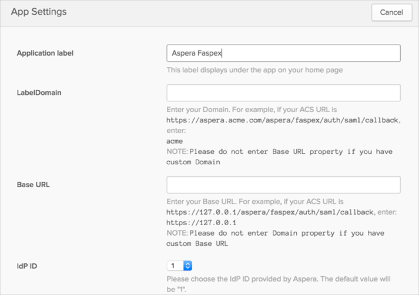
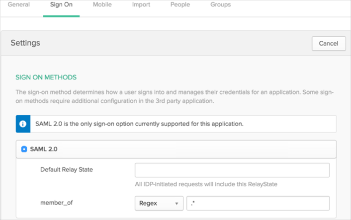

Follow the instructions below to configure SAML 2.0 for Aspera Faspex V4
Contact Aspera Support at support@asperasoft.com and request that they enable SAML 2.0 for your account.
Include the following IdP Metadata with your request:
Sign in to Okta Admin app to have this variable generated for you.
Aspera will send you a confirmation once SAML is set-up on their end. They may also send an IdP ID to be used by your org. If they don’t, leave it as the default value (see next step).
In Okta, select the General tab for the Aspera app, then click Edit.
Enter the LabelDomain or Base URL used by your org.
Enter the IdP ID provided by Aspera, or leave the default if not provided.
Click Save.

If necessary, you can add a filter for the group attributes. To do this, in Okta, select the Sign On tab for Aspera, then click on Edit.
Add a filter for the member_of group attribute.
Click Save.

Done!
Notes:
SP-initiated flows, IDP-initiated flows, and Just In Time (JIT) provisioning are all supported.